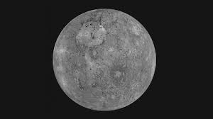
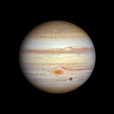
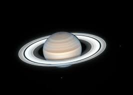
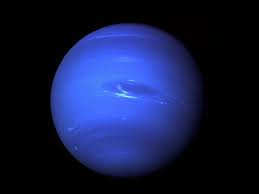

Klik pada setiap planet untuk mempelajari lebih lanjut.

Merkurius
Planet terkecil dan terdekat dengan Matahari.

Venus
Planet terpanas di tata surya kita.

Bumi
Satu-satunya planet yang diketahui memiliki kehidupan.

Mars
Dikenal sebagai 'Planet Merah' karena besinya.

Jupiter
Planet terbesar dengan 'Bintik Merah Raksasa'.

Saturnus
Terkenal dengan sistem cincinnya yang menakjubkan.

Uranus
Raksasa es yang berputar miring.

Neptunus
Planet terjauh dari Matahari, gelap dan berangin.